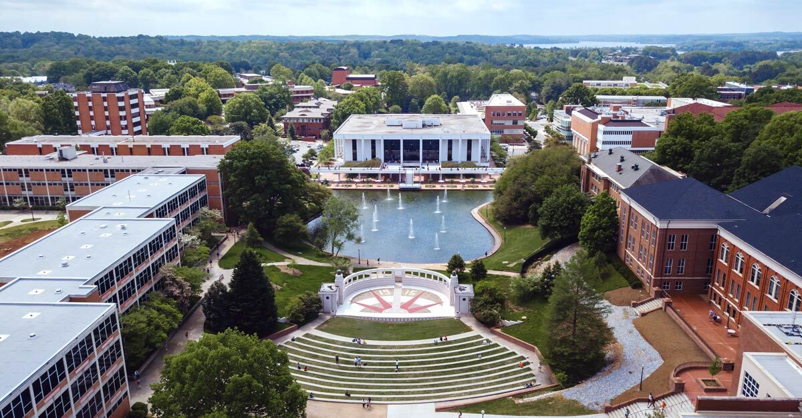

Meeting on Applied Algebraic Geometry 2026
April 18–19, 2026 · Clemson University
Overview
The Meeting on Applied Algebraic Geometry (MAAG) is a regional gathering which attracts participants primarily from the South-East of the United States. MAAG 2026 takes place at Clemson University on April 18-19, 2026. Previous meetings took place at Georgia Tech in 2015, 2018, 2019, and 2023, at Clemson in 2016, and at Auburn in 2025.
Organizers: Michael Burr, John Cobb, Kisun Lee, Anton Leykin, Julia Lindberg, Luke Oeding
Talks
-
Yulia Alexandr (University of California, Los Angeles) — Talk Title: TBD
Abstract
TBD.
-
Ayah Almousa (University of Kentucky) — Talk Title: TBD
Abstract
TBD.
-
Julianne Barnhart (Clemson University) — Talk Title: TBD
Abstract
TBD.
-
Alex Dunbar (Georgia Tech) — Talk Title: TBD
Abstract
TBD.
-
Hoon Hong (North Carolina State University) — Talk Title: TBD
Abstract
TBD.
-
Emily King (Colorado State University) — Talk Title: Group actions in frame theory, quantum information theory, and machine learning
Abstract
Group actions may be leveraged to create subspace configurations which are optimal in frame theory and quantum information theory, with equiangular Fourier frames and symmetric, informationally complete, positive operator-valued measures (SIC-POVMs) being two of the most well-known examples. In machine learning, highly symmetric vectors emerge when training neural networks under certain regimes (neural collapse), while orbits of group actions may be leveraged to perform classification tasks (e.g., bilipschitz invariants, group-invariant max filtering, invariant/equivariant neural networks). This talk will introduce these applications and conclude with some open problems.
-
Christopher Manon (University of Kentucky) — Talk Title: TBD
Abstract
TBD.
-
Kalina Mincheva (Tulane University) — Talk Title: TBD
Abstract
TBD.
Schedule
| Time | Session |
|---|---|
| 08:30–09:00 | Registration + Coffee |
| 09:00–09:50 | Talk 1 — Christopher Manon |
| 10:00–10:50 | Talk 2 — Alex Dunbar |
| 10:50–11:10 | Break |
| 11:10–12:00 | Talk 3 — Ayah Almousa |
| 12:00–12:20 | Poster Blitz |
| 12:20–13:00 | Lunch |
| 13:00–14:00 | Poster Session |
| 14:00–14:50 | Talk 4 — Yulia Alexandr |
| 14:50–16:10 | Coffee Break / Poster Session |
| 16:10–17:00 | Talk 5 — Emily King |
| Time | Session |
|---|---|
| 08:30–09:00 | Registration + Coffee |
| 09:00–09:50 | Talk 6 — Kalina Mincheva |
| 10:00–10:20 | Break |
| 10:20–11:10 | Talk 7 — Julianne Barnhart |
| 11:20–12:10 | Talk 8 — Hoon Hong |
| 12:10–13:10 | Lunch |
| 13:10–16:00 | M2 mini-workshop |
All talks in Martin Hall.
Participant Information
Lodging
TBA
Travel
Fly to Greenville-Spartanburg International Airport(GSP). Shuttle and rideshare options available. We’ll share a ride‑board link closer to the event.
Local
- Lunch: catered (Sat)
- Group Dinner: 5:45–7:45 PM (Sat)
- Nearby: campus eateries + downtown
Policies
We are required by the NSF Proposal & Award Policies & Procedures Guide (Chapter II.E.7), effective February 25, 2019, to provide all event participants with information on the University’s policy on sexual and other forms of harassment or sexual assault as well as directions on how to report any violations of this policy. For purposes of this requirement, “other forms of harassment” is defined as “non-gender or non-sex-based harassment of individuals protected under federal civil rights laws, as set forth in organizational policies or codes of conduct, statutes, regulations, or executive orders.”
We are committed to a respectful and inclusive meeting environment. MAAG 2026 follows Clemson University's policies on harassment and discrimination. Detailed conduct guidelines and Title IX resources will be provided to all participants.Funding
This conference is supported all or in part by the National Science Foundation under DMS Award No. 2552457.

Register
Open Registration Form (Funding requests close Mar 7, 2026)